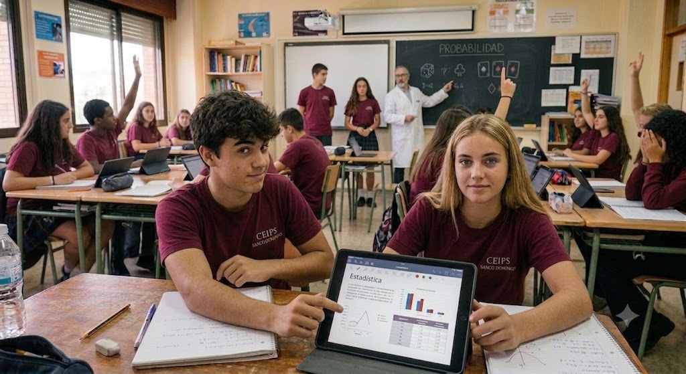

Estadística
Variables estadísticas, medidas de centralización y dispersión, y representación de datos.

Tema 14 (Estadística), Tema 15 (Combinatoria) y Tema 16 (Azar y probabilidad).
Variables estadísticas, medidas de centralización y dispersión, y representación de datos.
Variaciones, permutaciones y combinaciones. Número combinatorio.
Experimentos aleatorios, sucesos, probabilidad y tablas de contingencia.
Los archivos de ejercicios se descargan directamente desde cada tema una vez que el contenido correspondiente se haya visto en clase.